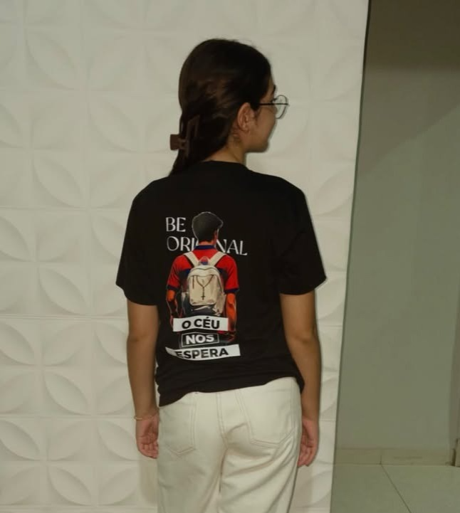

Como disse que iria ver o resto da cartinha em outro lugar. Entao Polar, não tenho palavras para falar sobre o que você significa para mim, com tão pouco tempo eu já não consigo me imaginar sem falar com você, todos os dias sua loucura me deixa mais feliz, posso ser negativos as vezes mas sei que quando falo com você esse sentimento passa. Júlia o que eu estou tentanto dizer é que, com você a minha vida mudou para melhor e não quero que isso acabe por minhas inseguranças ou pelas suas, por isso devemos cuidar um do outro. Agora nem sei mas o que falar, mas conte comigo para tudo o que você Júlia. Amo muito você!!!